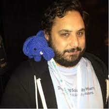
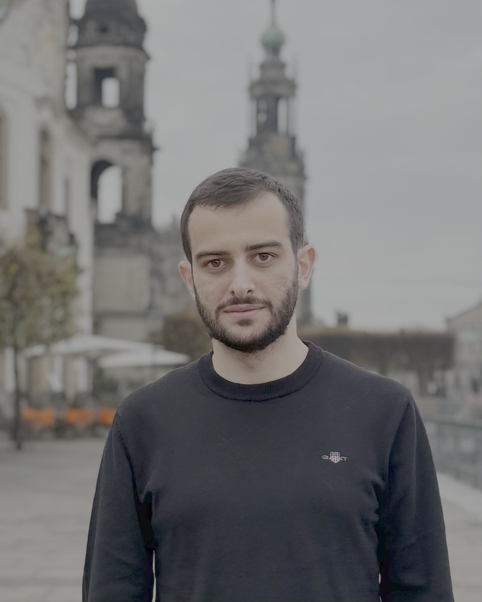
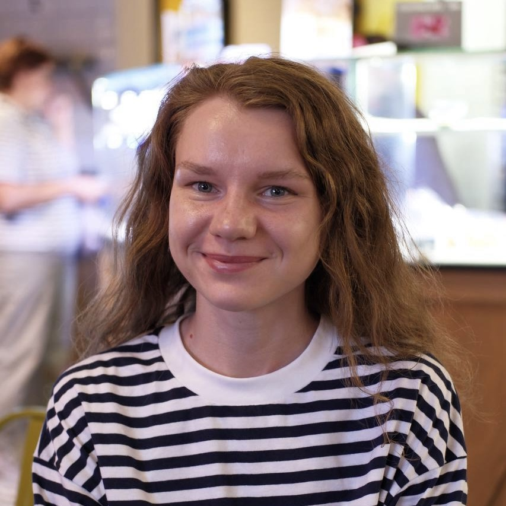
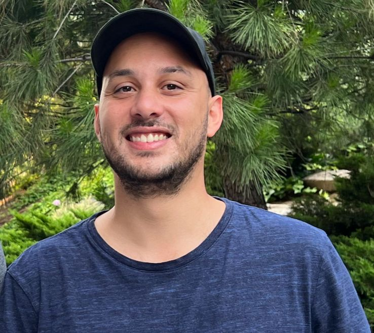
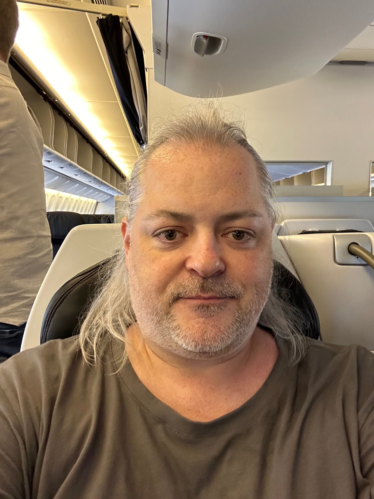
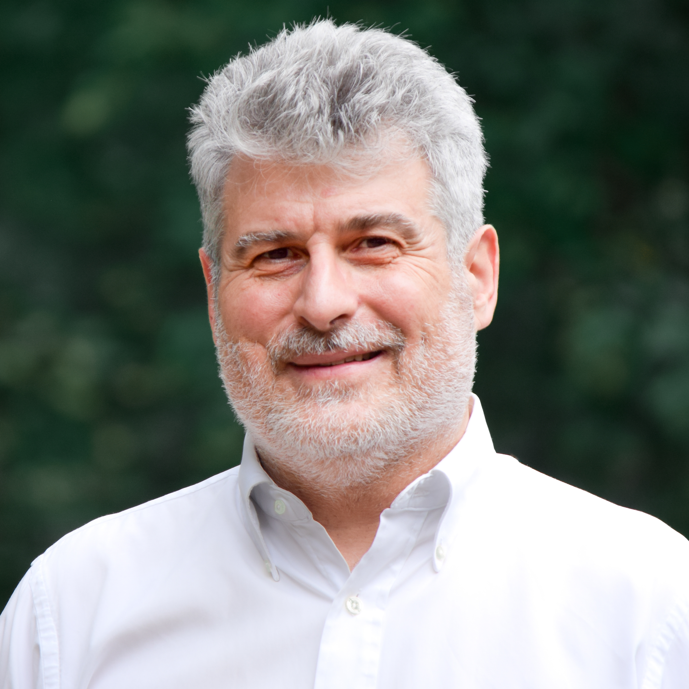

Emma Saroyan
Organizer
PGDay Armenia 2026
9:40 AM – 9:55 AM 15 min
Keynote
Postgres@Amazon

Robert Treat
Principal Database Engineer
Amazon Web Services

Robert Treat
Principal Database Engineer
Amazon Web Services
Amazon has a long history with PostgreSQL, whether it be internal company adoption or the many AWS services built around it. In this session, Robert Treat looks back across Amazon's journey with PostgreSQL, from its large-scale migration from Oracle to the creation of Amazon RDS for PostgreSQL. He will also look at how Amazon is making use of PostgreSQL today through current offerings such as Amazon Aurora for PostgreSQL and Amazon Aurora DSQL. We will conclude our conversation with a look at how AWS is working with the PostgreSQL community to address new and emerging database challenges.
10:00 AM – 10:30 AM 30 min
Debugging PostgreSQL Crashes in Production

Varik Matevosyan
Software Engineer
Amaros AI

Varik Matevosyan
Software Engineer
Amaros AI
Production database crashes can be difficult to investigate, especially when they occur under real workloads or involve custom extensions. This talk walks through a practical workflow for diagnosing PostgreSQL crashes using core dumps and GDB. We'll cover how to configure systems to capture useful crash data and how to reproduce and analyze failures locally. The session demonstrates how to inspect stack traces, examine memory, and identify the root cause of a crash. Special attention will be given to issues that arise in early-stage PostgreSQL extensions written in C or Rust. By the end, attendees will understand how to turn a production crash into actionable debugging information.
10:50 AM – 11:40 AM 50 min
Deep dive into the PostgreSQL FrontEnd/BackEnd protocol
Xavier Fischer
Principal Software Engineer
EDB
Xavier Fischer
Principal Software Engineer
EDB
Have you ever wondered what exactly happens on the network when your application talks to PostgreSQL? In this session, we will dive deep into the Postgres Frontend/Backend protocol. We'll decode and document real-world message exchanges, and learn how to use Wireshark to capture and diagnose database communication issues. Whether you are doing support without the codebase, debugging stubborn performance bottlenecks, writing a custom driver, or simply curious about database internals, you will leave with a solid understanding of how Postgres communicates on the wire and the practical skills to troubleshoot it effectively.
11:50 AM – 12:20 PM 30 min
When the PostgreSQL Planner Gets Too Optimistic: Index Choice and Join Estimates

Vlada Pogozhelskaya
Software Developer
Postgres Professional

Vlada Pogozhelskaya
Software Developer
Postgres Professional
PostgreSQL's query planner relies on selectivity and cardinality estimates to choose execution plans. When these estimates become unreliable, the planner may select plans that look inexpensive on paper but perform poorly in practice.
This talk examines two situations where this commonly happens: complex predicates that lead to poor index choices and joins with many conditions that cause severe cardinality underestimation. Using real execution plans, we will see why the planner struggles in these cases and how small changes in the planner's decision logic can produce more stable plans — without rewriting application queries.
The focus of the talk is on understanding how the planner makes decisions and how targeted changes in its behavior can make plan selection more predictable when estimates become unreliable.
12:30 PM – 1:00 PM 30 min
An Introduction to Postgres Indexes

Dalto Curvelano
Staff Software Engineer

Dalto Curvelano
Staff Software Engineer
Most developers know that indexes make queries faster, but few understand why — or when they don't. This talk starts from the physical layer, showing how PostgreSQL stores data on disk as heap files divided into 8KB pages, and how indexes create efficient lookup paths to avoid full sequential scans. We'll walk through each of the six built-in index types (B-Tree, Hash, BRIN, GIN, GiST, and SP-GiST), explaining what problems each one solves and where each falls short. Attendees will learn the real costs of indexes: disk space, write overhead, memory pressure, and query planner complexity. We'll cover practical techniques like partial indexes, covering indexes, expression indexes, and multi-column index design, with live EXPLAIN ANALYZE output showing the performance impact of each. The talk also covers PostgreSQL 18's new skip scan optimization and how it changes the rules for composite index design. You'll leave with a clear mental model for choosing the right index type and configuration for your workload.
2:00 PM – 2:50 PM 50 min
Window Functions Are Easier and More Powerful Than You Think

Vik Fearing
SQL and PostgreSQL Expert
Uniphant

Vik Fearing
SQL and PostgreSQL Expert
Uniphant
In some circles, window functions are considered "Advanced SQL". In this presentation, I will show you how easy and powerful they actually are.
We will start with the basic concept of partitions and orderings, then move on to simple frame specifications. Then we will look at more intricate frames and exclusion options, and how they can simplify quite a bit of application processing.
Finally, we will look at extensions that provide additional window functions to those defined by the SQL Standard, and take a peek at what the future might bring.
2:55 PM – 3:10 PM 15 min
When PostgreSQL Orchestrates Analytics
Ruslan Senchukov
Program Manager
MindWise
Ruslan Senchukov
Program Manager
MindWise
Modern data tools often rely on PostgreSQL in ways that go far beyond traditional CRUD applications. In this session, we'll explore how we used PostgreSQL as a metadata engine to power a dynamic data manipulation platform that connects to external databases, transforms tables, and drives analytical dashboards. We'll walk through the architectural decisions behind separating metadata (PostgreSQL) from analytical storage (ClickHouse), and why that boundary matters. The talk will cover schema design strategies, query generation patterns, and performance considerations when users can define transformations dynamically. We'll also share lessons learned from production — including what broke, what scaled, and what we would redesign. Attendees will leave with practical insights on using PostgreSQL as the control layer of a modern data platform.
3:30 PM – 4:00 PM 30 min
Choose Your Own Adventure: Postgres 18 Demos Sponsored session
Robert Treat
Principal Database Engineer
Amazon Web Services
Robert Treat
Principal Database Engineer
Amazon Web Services
You have heard great things about Postgres 18, but you just haven't had time to look into it. Sure, you want to learn more, but sitting through a bunch of slides sounds like a chore. What you really want is to see the features in Postgres 18 in action, so you can figure out what will help make your users (and you!) happier with as little work as possible. I'm Robert Treat, and I've put together a whirlwind tour of new features available in Postgres 18. I think I know what will help you get the most bang for the buck, but if I am wrong, we can choose the features that you want to see most. That's right, there are no slides in this presentation, not even an about-me slide; we're going straight into the database to help you learn what options will help you make the best case to get you upgraded.
4:05 PM – 4:35 PM 30 min
HugePages for PostgreSQL, Explained: What They Are, How to Size Them, and When They Help
Alicja Kucharczyk
PostgreSQL Consulting Lead
Clouds on Mars
Alicja Kucharczyk
PostgreSQL Consulting Lead
Clouds on Mars
HugePages often sound simple ("use large pages for shared memory"), but in practice people get stuck on the same questions: what they actually change, how to calculate the right amount, and how to confirm the system is using them correctly. In this talk I will explain HugePages in plain language, then walk through a clear sizing approach you can repeat on your own systems. You'll leave knowing what to check before enabling them, what common mistakes to avoid, and how to decide if HugePages are worth it for your workload. I'll finish with benchmark results comparing performance with and without HugePages.
4:40 PM – 5:30 PM 50 min
Postgres as an MCP Server

Bruce Momjian
Vice President and Postgres Evangelist
EDB

Bruce Momjian
Vice President and Postgres Evangelist
EDB
Large language models are good at generating text, but can't easily report discrete, dynamic, and always-accurate results. They also can't take external actions. The model context protocol (MCP) has become the standard way for generative AI models to access external data and take external actions. This talk explains the purpose of MCPs, how they are used, and shows examples of database and non-database MCP servers.
Emma Saroyan
Organizer
PGDay Armenia 2026